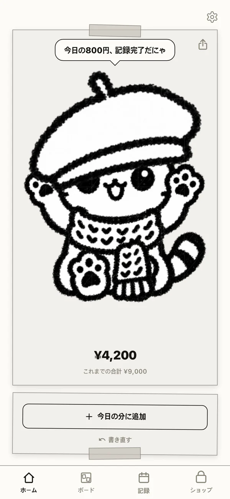
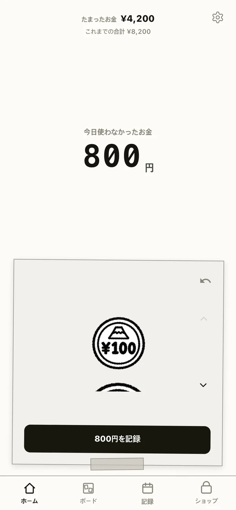
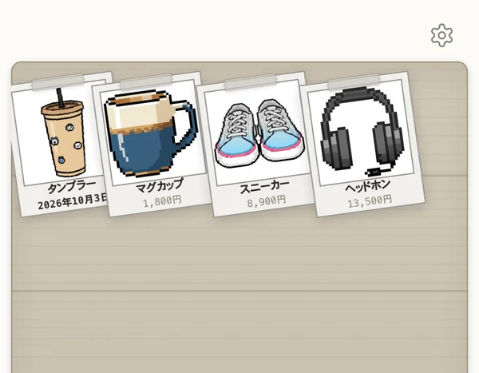
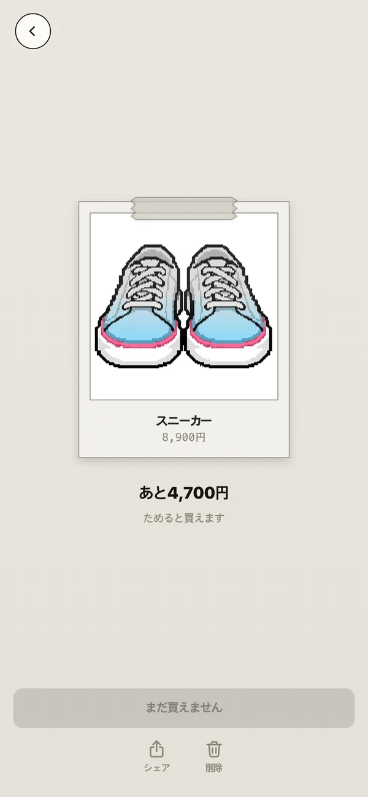
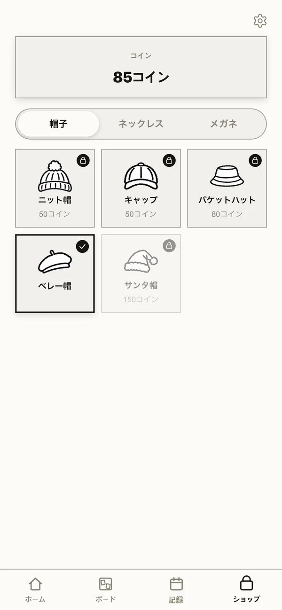
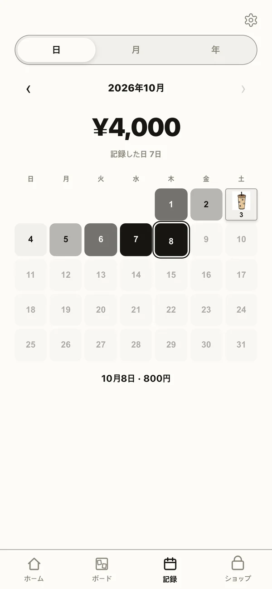
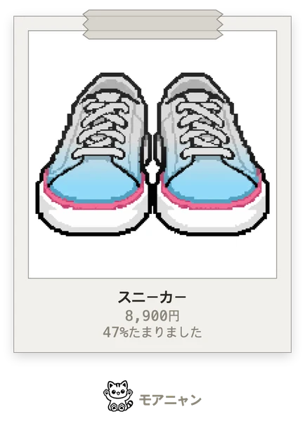
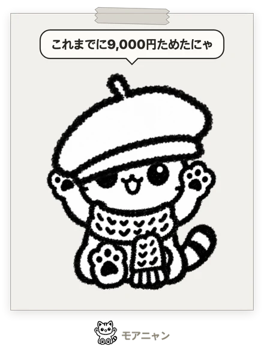

使わなかったお金で
ほしいものに
色をつけよう
コーヒー1杯、タクシー1回。今日節約したお金を記録すると、撮っておいたほしいものの写真が、たまったぶんだけ色づきます。
App Store 近日公開

1日10秒でおしまい!
節約したぶんだけ
写真が色づくにゃ

使い方
-

01使わなかったお金を記録
今日節約したお金を、硬貨とお札を押して1日1回記録します。コーヒーでもタクシーでも、何を節約したかは問いません。
ポチッと記録!
-

02ほしいものを撮る
写真を撮ると、AIがドット絵のインスタント写真にして木のボードに貼ってくれます。最初は白黒です。
ボードにペタッ!
-

03ためたぶんだけ色づく
記録するほど、写真が下から色で満ちていきます。あといくらかもすぐわかります。全部色づいたら、買えるという合図です。
半分まできた!
-

 04
04買ったら、ねこをおしゃれに
買うとコインがもらえます。コインで、ねこに帽子・ネックレス・メガネをつけてあげられます。
今日はベレー帽

ふりかえると、うれしい
記録タブで、毎日いくら節約したかがひと目でわかります。たくさん節約した日ほど濃く、買った日にはその写真が貼られます。
タンブラーを買った日!
節約するほど、おしゃれになるねこ

帽子ひとつが
買えたものひとつにゃ

帽子・ネックレス・メガネ、全15種類。ねこがおしゃれになったぶん、実際に買えたものが増えていきます。


自慢したくなったら
インスタント写真やおしゃれしたねこを、きれいな画像にしてInstagramのストーリーズにそのまま投稿したり、友だちに送ったりできます。値段やためた金額を表示するかは、投稿前に選べます。
ストーリーズにそのまま!
- 登録なしですぐ使えるメールアドレスもパスワードもいりません。開いたらすぐ使えます。
- 記録はスマホの中だけたまったお金や記録はサーバーに送りません。バックアップファイルで自分で守れます。
- 広告なし画面をふさぐ広告はありません。最初の1枚は無料です。
よくある質問
記録はどこに保存されますか？
たまったお金、日ごとの記録、ほしいものリストはすべてこの端末にのみ保存されます。サーバーには送られないため、アプリを削除すると記録も消えます。アプリの削除や機種変更の前に設定 → バックアップファイルを作るでファイルを保存しておけば、そのファイルからいつでも戻せます。
フィルムとは何ですか？
写真をドット絵に変換するときに1枚ずつ使います。最初の1枚は無料で、その後はフィルムパックを購入して使えます。変換に失敗した場合、フィルムは戻ります。
アプリを入れ直すとフィルムはどうなりますか？
そのまま残ります。フィルムはiPhoneのキーチェーンに保管した番号で管理しているため、再インストールしても引き継がれ、iCloudキーチェーンをオンにしていれば同じApple アカウントの新しいiPhoneにも引き継がれます。購入後にフィルムが届かない場合は、購入日と商品を添えてメールでお問い合わせください。
写真はどこに送られますか？
ドット絵に変換するため外部のAIサービス（fal.ai）に送信され、保存されません。詳しくはプライバシーポリシーをご確認ください。
返金するには？
決済はAppleが行うため、返金もAppleにご請求ください。reportaproblem.apple.comから申請できます。
お問い合わせ sokurihj@gmail.com